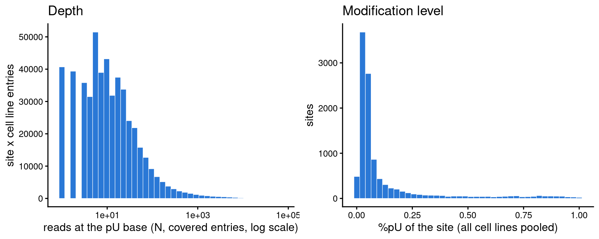
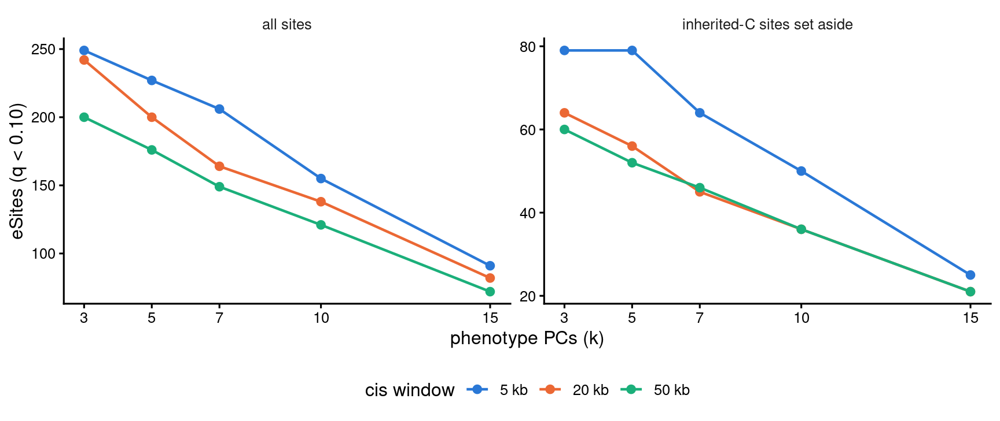

Last updated: 2026-11-12
Checks: 6 1
Knit directory: pumseq/
This reproducible R Markdown analysis was created with workflowr (version 1.7.0). The Checks tab describes the reproducibility checks that were applied when the results were created. The Past versions tab lists the development history.
The R Markdown is untracked by Git. To know which version of the R
Markdown file created these results, you’ll want to first commit it to
the Git repo. If you’re still working on the analysis, you can ignore
this warning. When you’re finished, you can run
wflow_publish to commit the R Markdown file and build the
HTML.
Great job! The global environment was empty. Objects defined in the global environment can affect the analysis in your R Markdown file in unknown ways. For reproduciblity it’s best to always run the code in an empty environment.
The command set.seed(20260202) was run prior to running
the code in the R Markdown file. Setting a seed ensures that any results
that rely on randomness, e.g. subsampling or permutations, are
reproducible.
Great job! Recording the operating system, R version, and package versions is critical for reproducibility.
Nice! There were no cached chunks for this analysis, so you can be confident that you successfully produced the results during this run.
Great job! Using relative paths to the files within your workflowr project makes it easier to run your code on other machines.
Great! You are using Git for version control. Tracking code development and connecting the code version to the results is critical for reproducibility.
The results in this page were generated with repository version e23ea81. See the Past versions tab to see a history of the changes made to the R Markdown and HTML files.
Note that you need to be careful to ensure that all relevant files for
the analysis have been committed to Git prior to generating the results
(you can use wflow_publish or
wflow_git_commit). workflowr only checks the R Markdown
file, but you know if there are other scripts or data files that it
depends on. Below is the status of the Git repository when the results
were generated:
Ignored files:
Ignored: analysis/qtl_mapping_summary_cache/
Untracked files:
Untracked: analysis/stage1_phenotype_preparation.Rmd
Note that any generated files, e.g. HTML, png, CSS, etc., are not included in this status report because it is ok for generated content to have uncommitted changes.
There are no past versions. Publish this analysis with
wflow_publish() to start tracking its development.
suppressMessages({ library(data.table); library(ggplot2) })
knitr::opts_chunk$set(echo = TRUE, warning = FALSE, message = FALSE)
PR <- "/project/xinhe/xsun/pumseq/pumseq_processed"
PH <- file.path(PR, "psi_qtl/phenotype")
FINAL <- file.path(PH, "fold5_union_auto_noUCcalled")
ANNO <- file.path(PR, "joint/fold5_union_analysis/fold5_union_sites_annotated.txt.gz")
SEL <- file.path(PR, "psi_qtl/qtl_betabinomial/pc_window_selection/fold5_union_auto_noUCcalled/summary")
CG <- file.path(PR, "psi_qtl/qtl_betabinomial/calibration_grid")
fmt <- function(x) format(x, big.mark = ",", trim = TRUE, scientific = FALSE)
sites <- fread(ANNO, colClasses = list(character = c("ref", "strand")))
C <- fread(file.path(FINAL, "counts/C_matrix.txt.gz")); N <- fread(file.path(FINAL, "counts/N_matrix.txt.gz"))
cls <- setdiff(names(C), c("ref", "pos", "strand"))
Cm <- as.matrix(C[, ..cls]); Nm <- as.matrix(N[, ..cls])
ri <- fread(file.path(FINAL, "runinfo.txt")); rv <- function(k) as.numeric(ri[parameter == k, value])
man <- fread(file.path(FINAL, "site_exclusion_manifest.txt.gz"))
pc_old <- fread(file.path(PH, "fold5_union/mvalue_pcs.txt")); pc_new <- fread(file.path(FINAL, "mvalue_pcs.txt"))
stopifnot(identical(pc_old$sample, pc_new$sample))
ST <- fread(file.path(SEL, "selection_table.tsv"))
SC <- fread(file.path(SEL, "selection_no_inheritedC.tsv"))
G <- fread(file.path(CG, "grid_calibration.tsv"))[window_kb %in% unique(ST$window_kb) & npcs %in% unique(ST$npcs)]
th <- theme_classic(base_size = 12)
covered <- mean(Nm > 0, na.rm = TRUE); med_depth <- median(Nm[Nm > 0], na.rm = TRUE)
bacs <- sites[in_bacs & !is.na(mean_ratio)]; r_bacs <- cor(bacs$mean_ratio, bacs$bacs_psi)
best <- ST[, .SD[which.max(disc_q10)], by = window_kb]
stopifnot(all(best$npcs == 3)) # the text below states that k = 3 is best at every window
stopifnot(all(SC[window_kb > min(window_kb), .SD[which.max(eSites_clean_q10)], by = window_kb]$npcs == 3)) # "k = 3 leads at the larger windows"Stage 1 of the working plan asks two questions: how is Ψ (pU) quantified at each site, and how are technical covariates corrected. The answers in brief:
knitr::kable(data.table(
question = c("Quantify pU per site", "", "", "Correct technical covariates", ""),
answer = c(sprintf("%s sites, called in 5 disjoint folds of 10 cell lines and combined (%s before filtering)",
fmt(nrow(C)), fmt(nrow(sites))),
sprintf("per site and cell line: converted reads C out of depth N = C + T (%d cell lines)", length(cls)),
"sites with a called U/C variant on the pU base removed (genotype read-out)",
"phenotype principal components (M-value PCs), recomputed on the filtered sites",
"k = 3 PCs: the most eSites at every cis window tested")),
col.names = c("", ""))| Quantify pU per site | 10,738 sites, called in 5 disjoint folds of 10 cell lines and combined (12,416 before filtering) |
| per site and cell line: converted reads C out of depth N = C + T (50 cell lines) | |
| sites with a called U/C variant on the pU base removed (genotype read-out) | |
| Correct technical covariates | phenotype principal components (M-value PCs), recomputed on the filtered sites |
| k = 3 PCs: the most eSites at every cis window tested |
The 50 genotyped cell lines are split into 5 disjoint folds of 10. Within each fold the reads of its 10 lines are pooled and every candidate site is tested (chi-squared test, FDR < 0.01, rate difference > 0.05, depth >= 20). The sites called in any fold are combined, giving 12,416 sites. CL19039 has no genotype in any source, so it is left out here and in QTL mapping. Details: 5-fold site-calling page.
Our %pU agrees with the orthogonal BACS Ψ levels: Pearson r = 0.93 at the 472 sites that BACS also measures.
knitr::kable(rbindlist(lapply(1:5, function(k) {
s <- sites[n_folds >= k]; b <- s[in_bacs & !is.na(mean_ratio)]
data.table(`called in >= k folds` = k, sites = fmt(nrow(s)), `in BACS` = nrow(b),
`r with BACS` = sprintf("%.2f", cor(b$mean_ratio, b$bacs_psi)))
})), caption = "Sites by the number of folds that called them. The QTL phenotype uses all of them (k = 1).")| called in >= k folds | sites | in BACS | r with BACS |
|---|---|---|---|
| 1 | 12,416 | 472 | 0.93 |
| 2 | 4,816 | 407 | 0.93 |
| 3 | 3,210 | 371 | 0.93 |
| 4 | 2,459 | 338 | 0.93 |
| 5 | 1,819 | 288 | 0.93 |
Two filters (13.filtered_phenotype.R): autosomes only,
since the genotype panel is autosomal, and removal of sites with a
U/C variant called on the pU base. pU is read out as a
T-to-C change, so a cell line that carries a C at the pU base shows
“conversion” without modification. At such a site %pU reads out genotype
and mimics a strong QTL.
knitr::kable(data.table(
step = c("called sites", "on chr1-22", "minus sites with a called U/C variant on the pU base"),
sites = fmt(c(nrow(sites), rv("n_sites_in"), rv("n_retained")))),
caption = sprintf("%s sites removed by the U/C filter.", fmt(rv("n_excluded"))))| step | sites |
|---|---|
| called sites | 12,416 |
| on chr1-22 | 11,856 |
| minus sites with a called U/C variant on the pU base | 10,738 |
The untreated controls (no chemistry, so any C is inherited) give a second check on the same problem:
m <- copy(man)[, called := fifelse(annotated_UC, "U/C variant called (removed)", "no U/C variant called (kept)")]
m[, untreated := fifelse(!judgeable_untreated, "too few untreated reads to judge",
fifelse(measured_alias, "inherited C in untreated RNA", "no inherited C"))]
knitr::kable(dcast(m[, .N, by = .(untreated, called)], untreated ~ called, value.var = "N", fill = 0),
caption = "Autosomal sites. 'Inherited C': a cell line with >= 10 untreated reads shows >= 10% C at the pU base, from >= 2 C reads.")| untreated | U/C variant called (removed) | no U/C variant called (kept) |
|---|---|---|
| inherited C in untreated RNA | 1069 | 1057 |
| no inherited C | 45 | 9473 |
| too few untreated reads to judge | 4 | 208 |
n_ic <- man[annotated_UC == FALSE & measured_alias %in% TRUE, .N]1,057 kept sites show inherited C without a called variant, presumably variants missing from the genotype calls. How to treat them is decided in Stage 2 (see the open items at the end).
For each site and cell line the phenotype is the raw count pair: C converted reads out of N = C + T reads at the pU base in the treated library, with treated replicates summed. It is modelled directly with a beta-binomial distribution, with no transformation, normalisation or imputation. The matrix is 10,738 sites x 50 cell lines; 92.7% of entries have at least one read, with a median depth of 9 reads.
d1 <- data.table(depth = Nm[Nm > 0 & !is.na(Nm)])
d2 <- data.table(pu = rowSums(Cm, na.rm = TRUE) / rowSums(Nm, na.rm = TRUE))
p1 <- ggplot(d1, aes(depth)) + geom_histogram(bins = 40, fill = "#2a78d6", colour = "white", linewidth = 0.2) +
scale_x_log10() + labs(x = "reads at the pU base (N, covered entries, log scale)", y = "site x cell line entries",
title = "Depth") + th
p2 <- ggplot(d2, aes(pu)) + geom_histogram(bins = 40, fill = "#2a78d6", colour = "white", linewidth = 0.2) +
labs(x = "%pU of the site (all cell lines pooled)", y = "sites", title = "Modification level") + th
gridExtra::grid.arrange(p1, p2, ncol = 2)
The covariates are M-value PCs. For each site and cell line, \(M = \log_2[(C + \pi_s)/(T + 1 - \pi_s)]\), with \(\pi_s\) the site’s pooled %pU. M is standardised per site and its principal components are taken across cell lines. The PCs are recomputed on the filtered sites, because the original PCs, taken from all sites, could partly encode the genotype read-out sites. The two sets are close:
r <- abs(diag(cor(as.matrix(pc_old[, paste0("PC", 1:5), with = FALSE]), as.matrix(pc_new[, paste0("PC", 1:5), with = FALSE]))))
knitr::kable(data.table(PC = paste0("PC", 1:5), `|correlation|, original vs recomputed` = sprintf("%.2f", r)))| PC | |correlation|, original vs recomputed |
|---|---|
| PC1 | 1.00 |
| PC2 | 0.94 |
| PC3 | 0.95 |
| PC4 | 0.98 |
| PC5 | 0.96 |
k was chosen to maximise discoveries, as in the reference m6A-QTL study: a real-data scan of every combination of k = 3, 5, 7, 10, 15 and cis windows of 5, 20 and 50 kb. It used the beta-binomial likelihood-ratio test with 100 per-site permutations, a beta approximation, and Storey q-values. eSites are sites with q < 0.10 (q < 0.05 in brackets):
ws <- sort(unique(ST$window_kb))
tab <- function(d, a, b) dcast(d[, .(npcs, w = paste0(window_kb, " kb"), v = sprintf("%d (%d)", get(a), get(b)))],
npcs ~ w, value.var = "v")[, c("npcs", paste0(ws, " kb")), with = FALSE]
t1 <- tab(ST, "disc_q10", "disc_q05"); t2 <- tab(SC, "eSites_clean_q10", "eSites_clean")
setnames(t1, "npcs", "k"); setnames(t2, "npcs", "k")
knitr::kable(t1, caption = "eSites, all sites: q < 0.10 (q < 0.05).")| k | 5 kb | 20 kb | 50 kb |
|---|---|---|---|
| 3 | 249 (204) | 242 (191) | 200 (177) |
| 5 | 227 (197) | 200 (168) | 176 (160) |
| 7 | 206 (163) | 164 (148) | 149 (134) |
| 10 | 155 (135) | 138 (118) | 121 (110) |
| 15 | 91 (78) | 82 (66) | 72 (64) |
knitr::kable(t2, caption = "eSites with the inherited-C sites set aside (q recomputed): q < 0.10 (q < 0.05).")| k | 5 kb | 20 kb | 50 kb |
|---|---|---|---|
| 3 | 79 (61) | 64 (51) | 60 (50) |
| 5 | 79 (64) | 56 (50) | 52 (44) |
| 7 | 64 (54) | 45 (40) | 46 (40) |
| 10 | 50 (42) | 36 (32) | 36 (33) |
| 15 | 25 (21) | 21 (15) | 21 (18) |
pd <- rbind(ST[, .(npcs, window_kb, eSites = disc_q10, set = "all sites")],
SC[, .(npcs, window_kb, eSites = eSites_clean_q10, set = "inherited-C sites set aside")])
pd[, window := factor(paste0(window_kb, " kb"), paste0(ws, " kb"))]
ggplot(pd, aes(npcs, eSites, colour = window)) + geom_line(linewidth = 0.8) + geom_point(size = 2.2) +
facet_wrap(~ set, scales = "free_y") + scale_x_continuous(breaks = sort(unique(pd$npcs))) +
scale_colour_manual(values = c("#2a78d6", "#eb6834", "#1baf7a"), name = "cis window") +
labs(x = "phenotype PCs (k)", y = "eSites (q < 0.10)") + th +
theme(strip.background = element_blank(), legend.position = "bottom")
lam <- G[, .(lo = min(perm_lambda_min), hi = max(perm_lambda_max)), keyby = npcs]
e5 <- SC[window_kb == min(ws)]Decision: k = 3. A run extending the same scan to 100 and 200 kb windows (k = 3 and 5, 100 permutations, deduplicated genotypes) is in progress. It will make the k x window comparison consistent with the window choice in Stage 2.
sessionInfo()R version 4.2.0 (2022-04-22)
Platform: x86_64-pc-linux-gnu (64-bit)
Running under: CentOS Linux 7 (Core)
Matrix products: default
BLAS/LAPACK: /software/openblas-0.3.13-el7-x86_64/lib/libopenblas_haswellp-r0.3.13.so
locale:
[1] C
attached base packages:
[1] stats graphics grDevices utils datasets methods base
other attached packages:
[1] ggplot2_4.0.3 data.table_1.14.2
loaded via a namespace (and not attached):
[1] Rcpp_1.0.12 highr_0.9 RColorBrewer_1.1-3 pillar_1.9.0
[5] compiler_4.2.0 bslib_0.3.1 later_1.3.0 jquerylib_0.1.4
[9] git2r_0.30.1 workflowr_1.7.0 R.methodsS3_1.8.1 R.utils_2.11.0
[13] tools_4.2.0 digest_0.6.29 gtable_0.3.6 jsonlite_1.8.0
[17] evaluate_0.15 lifecycle_1.0.4 tibble_3.2.1 pkgconfig_2.0.3
[21] rlang_1.1.2 cli_3.6.1 rstudioapi_0.13 yaml_2.3.5
[25] xfun_0.41 fastmap_1.1.0 gridExtra_2.3 withr_2.5.0
[29] dplyr_1.1.4 stringr_1.5.1 knitr_1.39 generics_0.1.4
[33] fs_1.5.2 vctrs_0.6.5 sass_0.4.1 tidyselect_1.2.0
[37] rprojroot_2.0.3 grid_4.2.0 glue_1.6.2 R6_2.5.1
[41] fansi_1.0.3 rmarkdown_2.25 farver_2.1.0 magrittr_2.0.3
[45] scales_1.4.0 promises_1.2.0.1 htmltools_0.5.2 dichromat_2.0-0.1
[49] httpuv_1.6.5 labeling_0.4.2 S7_0.2.0 utf8_1.2.2
[53] stringi_1.7.6 R.oo_1.24.0